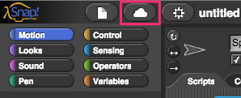

Lab 0.4 - Getting to Know You¶
In this lab, you will explore Snap! and create a simple “self-portrait” program to introduce yourself to your instructors and classmates.
Part 1 - Exploring SNAP¶
Open Snap! on your computer. The URL is http://snap.berkeley.edu/run
In order to save your programs, the first thing you’ll need to do is make an account. In the Snap! browser window, find the cloud-shaped button in the top toolbar on the upper left corner of the window:

Click it, select the “sign up” option in the menu, and follow the instructions there. You will need to check your email after creating your account to get your initial password. Your username will be the first part of your school email address. If you need help, ask.

Spend a few minutes looking around, trying things out, and experience what the language can do. Don’t worry about understanding everything completely– we’ll go through things in a lot more detail soon. Just try to get a sense of some of the basic capabilities.
Write down three things in your notebook you found that Snap! can do and how to do them. Be as specific as you can!
Snap! can do this…
If I do this…
1.
2.
3.
Find a partner and compare notes. Share your findings with your partner and ask him or her about what he or she learned. Write down the three capabilities your partner found below.
Snap! can do this…
If I do this…
1.
2.
3.
.
Using what you’ve learned and other things you might discover, create a Snap! program that describes yourself. This can take whatever form and use whatever Snap! tools and blocks you want. Make sure that somehow, at some point in your program you show the following information:
Your name
Your current grade
Your age
Your favorite subject in school
One of your hobbies or interests
Any previous programming or computer experience you have
Example of something you learned
What you think learning CS will be like.
What are some of your favorite uses of technology
Family saying
Submit your Self Portrait using the submission instructions of your instructor. If you are having trouble saving, here is a great video: https://youtu.be/VHts_QAp3XU
Grading Scheme/Rubric¶
Lab 0.4 Criteria |
Point Values |
|---|---|
Part 1 |
|
1.4 Listed 3 things you found Snap! can do |
0.3 points |
1.5 Listed 3 things your partner found Snap! can do |
0.3 points |
Part 2 |
|
Includes name |
0.2 points |
Current grade |
0.2 points |
Age |
0.2 points |
Programming or computer experience |
0.0 points |
Learning CS going to be like |
0.2 points |
Favorite uses of technology |
0.2 points |
Favorite subject in school |
0.2 points |
Example of something learned |
0.2 points |
Hobby or interest |
0.2 points |
Family Saying |
0.2 points |
PROJECT TOTAL |
2.4 points |